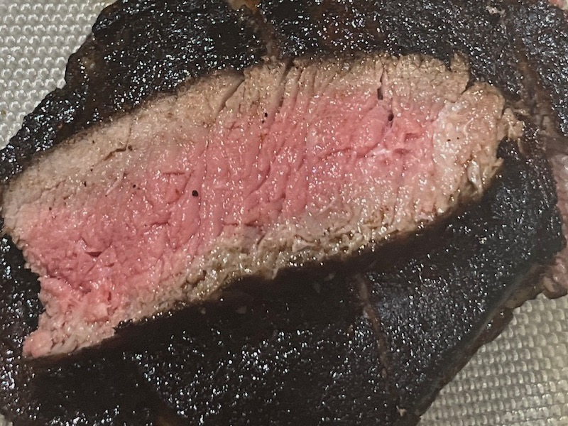

The Forbidden Cookbook
In my mind I cannot think of anything more delicious than a premium steak.

These are the ingredients you will need to pan fry a dreamy steak:
Steak: Ribe eye is my favorite but try different cuts.
Butter
Avocado Oil
Searing hot pan
Rosemary
Garlic
Salt
Pepper
Follow these steps to make a great steak:
- Season a room temperatute steak with a generous amount of salt and pepper.
- Let steak rest in the frindge uncovered for 24-72 hours. Flip steak at the half way duration. This step can be skipped if you're running low on time. But this is what gives steak the thick crispy crust and allows salt to penetrate the meat.
- If you followed step 2, allow steak to sit outside of the fridge and rise to room temperature. Move to step 5.
- if you skipped step 2 your steak is ready to be cooked, move to step 5.
- Gather and prep all ingredients. We're about to start cooking this will go fast.
- Lightly cover the bottom of pan with avocado oil then heat the pan to very very hot.
- Once then pan is very very hot place the steak on the pan pressing it evenly and flat against hot pan to produce a nice crust.
- Let the steak cook where you placed it for 3-5 minutes assuming that thisd is an average size rib-eye. Don't move it too much to help develop crust. You'll know it's ready to be flipped when the middle starts to change color as heat rises up the steak. Don't forget to have the garlic, butter, & rosemary ready.
- Flip the steak. Wait 1-2 minutes then add butter, rosemary, and garlic to the pan and baste the top of the steak for 30 seconds to 1 minute.
- Remove steak from the heat and let it rest of as long as it cooked, 5 minutes in this case. Do not cut into steak right away this will cause it to lose juicyness. Wait for it to cool then cut into it.
These are the steps. If you make the best steak of your life or not depends on you. Enjoy messing up or just give your burnt black steak to the dog.
There is one thing which surpases the best steak man could ever make.